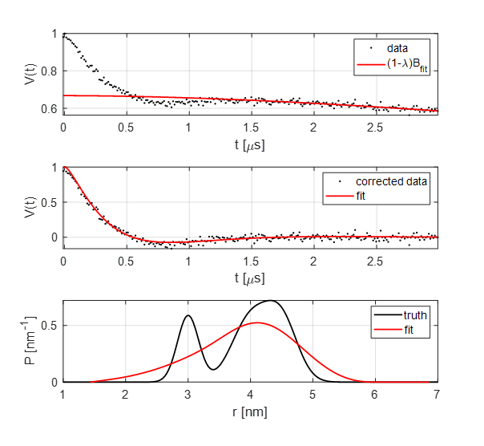

Emulating the DeerAnalysis workflow¶
Script:
%============================================================================
% DeerLab Example:
% Emulating the DeerAnalysis workflow
%============================================================================
% This example shows how to reproduce the type of workflow implemented in
% DeerAnalysis, using DeerLab functions. This kind of analysis workflow is
% outdated and not recommended for routine or accurate data analysis.
clf,clc,clear
% Generating a dataset
%-----------------------------------------------------------------------------
% For this example we will simulate a simple 4pDEER signal
% Parameters
rng(1)
t = linspace(0,3,250);
rtrue = linspace(1,7,200);
Ptrue = dd_gauss3(rtrue,[4.5 0.6 0.4 3 0.4 0.3 4 0.7 0.5]);
lambda = 0.3;
kappa = 180; %uM
% Simulate an experimental signal with some a.u. and phase offset
Bmodel = @(t,lam) bg_hom3d(t,kappa,lam);
V = dipolarsignal(t,rtrue,Ptrue,lambda,Bmodel,'scale',3e6,'phase',-pi/8,'noiselevel',0.01);
% DeerAnalysis workflow
%-----------------------------------------------------------------------------
% Pre-processing
V = correctphase(V);
t = correctzerotime(V,t);
V = V/max(V);
% Distance axis estimation
r = time2dist(t);
% Background fit
[Bfit,lamfit] = fitbackground(V,t,@bg_strexp);
% Background "correction" by division
Vcorr = (V./Bfit - 1 + lamfit)/lamfit;
% Tikhonov regularization using the L-curve criterion
K = dipolarkernel(t,r);
Pfit = fitregmodel(Vcorr,K,r,'tikh','lr');
% Plots
%-----------------------------------------------------------------------------
subplot(311)
plot(t,V,'k.',t,(1-lamfit)*Bfit,'r','LineWidth',1.5)
axis tight, grid on
set(gca,'FontSize',13)
xlabel('t [\mus]')
ylabel('V(t)')
legend('data','(1-\lambda)B_{fit}')
subplot(312)
plot(t,Vcorr,'k.',t,K*Pfit,'r','LineWidth',1.5)
axis tight, grid on
set(gca,'FontSize',13)
xlabel('t [\mus]')
ylabel('V(t)')
legend('corrected data','fit')
subplot(313)
plot(rtrue,Ptrue,'k',r,Pfit,'r','LineWidth',1.5)
axis tight, grid on
set(gca,'FontSize',13)
xlabel('r [nm]')
ylabel('P [nm^{-1}]')
legend('truth','fit')
Output:
{kind=link}